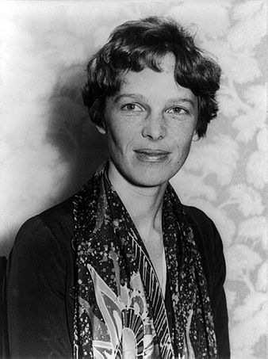

수학 분야 위인

아멜리아 에어하트 (Amelia Earhart)
- 분야
- 공학
- 출생 및
사망 - 출생 > 1897년 7월 24일
사망 > 1939년 1월 5일 (추정) - 업적 요약
- 대서양 횡단에 성공한 비행사이다.
- 업적 상세
-
1928년에 그는 북아메리카 대륙을 횡단한 첫 여성 파일럿이 되었다.
그녀의 비행 능력과 전문가 근성은 점차적으로 성장했고, 그와 함께 비행했던 경험 많은 전문 파일럿들은 그를 인정했다.
그와 함께 비행했던 대장은 그를 섬세한 조종간 조작법을 가진 타고난 파일럿이라고 칭찬했다.
에어하트는 그가 적극적으로 독립된 여성 기록을 세우는 것을 증진시켰던 국가항공협회의 일원이 되었다.
1931년 피트케언 PCA-2 오토자이로 고도 18,415피트(5,613미터)를 날아 세계신기록을 세웠다.
이 시기에, 그는 여성 파일럿들을 후원하던 단체인 나인티나인스에 참여했다.
그는 여성 파일럿들과 만났고, 특권을 가진 일원의 숫제에 기초한 이름을 제안했다.
그는 1930년에 조직의 첫 회장이 되었고 여성 파일럿들의 열렬한 지지자였다.
1932년 단독 대서양 비행을 시작해 14시간 56분 동안 비행한 후 강한 북풍과 추운 날씨, 기계적 문제 때문에 데리 북쪽의 컬모어에 있는 한 목초지에 착륙했다.
이 지역은 현재 작은 박물관인 ‘어밀리아 에어하트 센터’가 되었다.
대서양을 무착륙으로 횡단한 첫 여성이었기에, 미국 국회로부터 공군 수훈 십자 훈장, 프랑스 정부로부터 레지옹 도뇌르 훈장, 허버트 후버 대통령으로부터 내셔널 지오그래픽 협회상 금메달을 수여받았다.
1935년에는 하와이 호놀룰루에서 캘리포니아주 오클랜드까지 단독으로 비행한 첫 사람이 되었다.
다음해 4월 19일에는 로스앤젤레스부터 멕시코시티까지 단독으로 비행했고, 멕시코시티에서 뉴욕까지 무착륙으로 비행했다.
1935년 세계 일주를 계획했고 1937년도의 두 번째 시도에서 22,000마일(35,000 km)을 이동했고, 7,000마일(11,000 km)을 남겨두고 있었다.
마지막 착륙지인 뉴기니 섬의 라울에서 출발한 후 실종되었고 1939년 1월 5일 사망 선고를 받았다.
1940년 그의 것으로 추정되는 유골이 키리바시 공화국의 니쿠마로로라는 섬에서 발견되었으나 정확한 신분을 찾지 못하다 2018년 재분석 결과 유골이 그와 99% 일치한다는 결과가 나왔다.